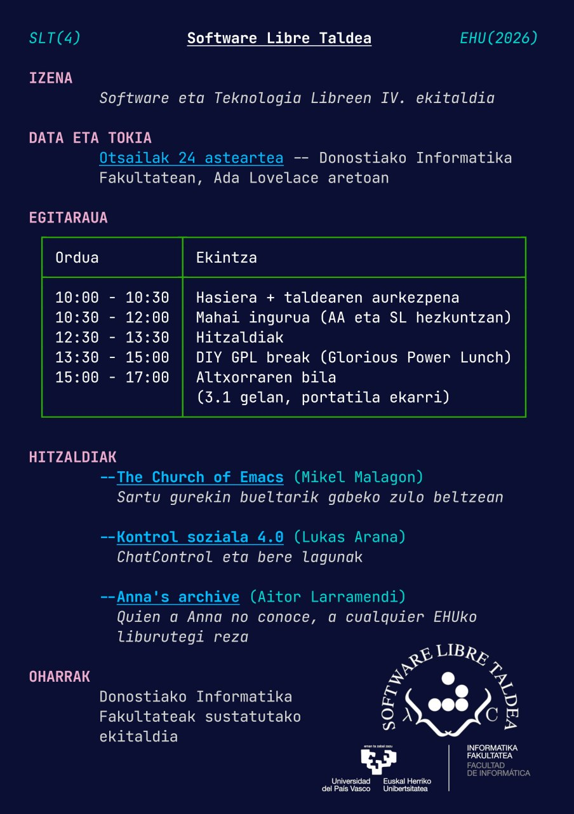
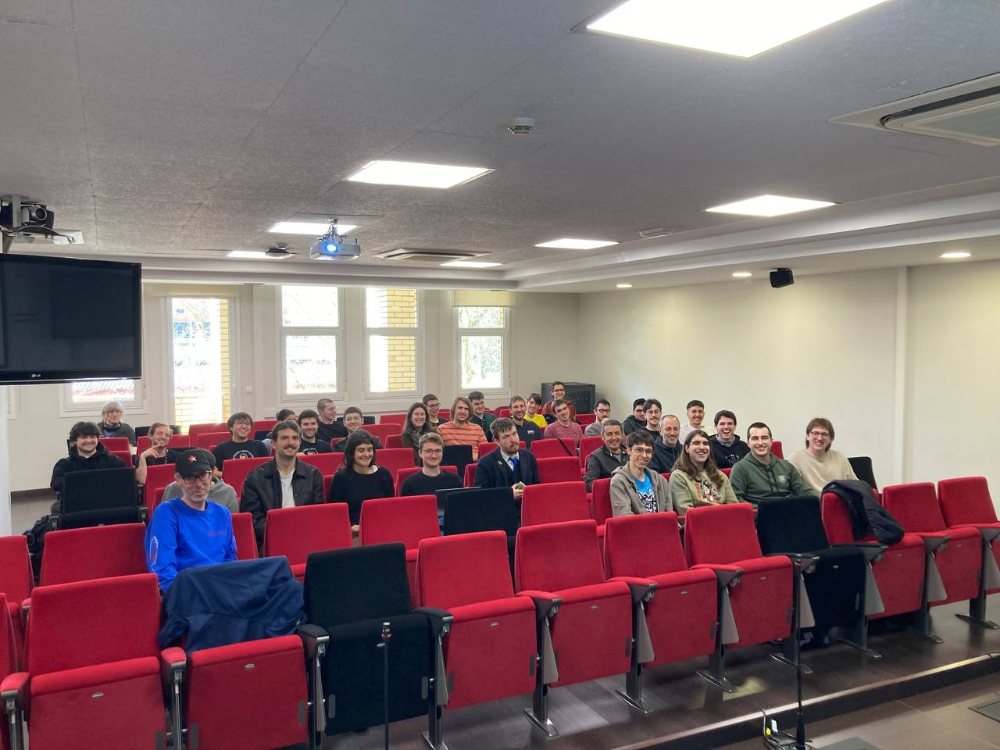
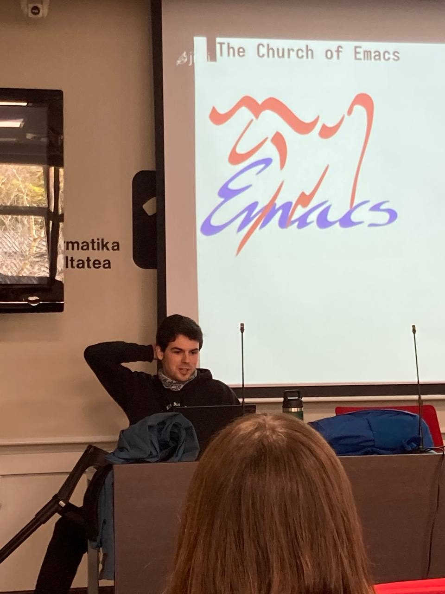
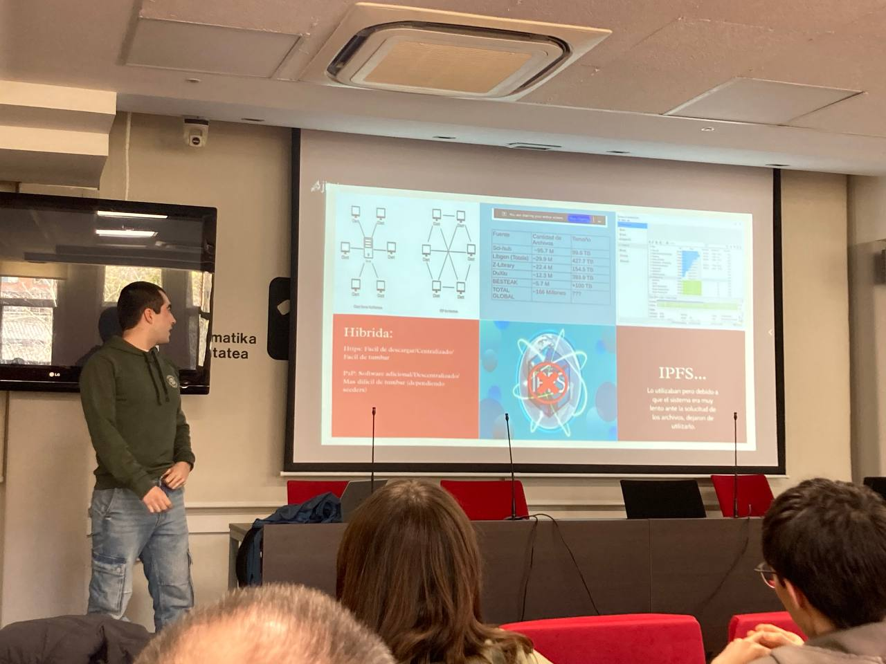
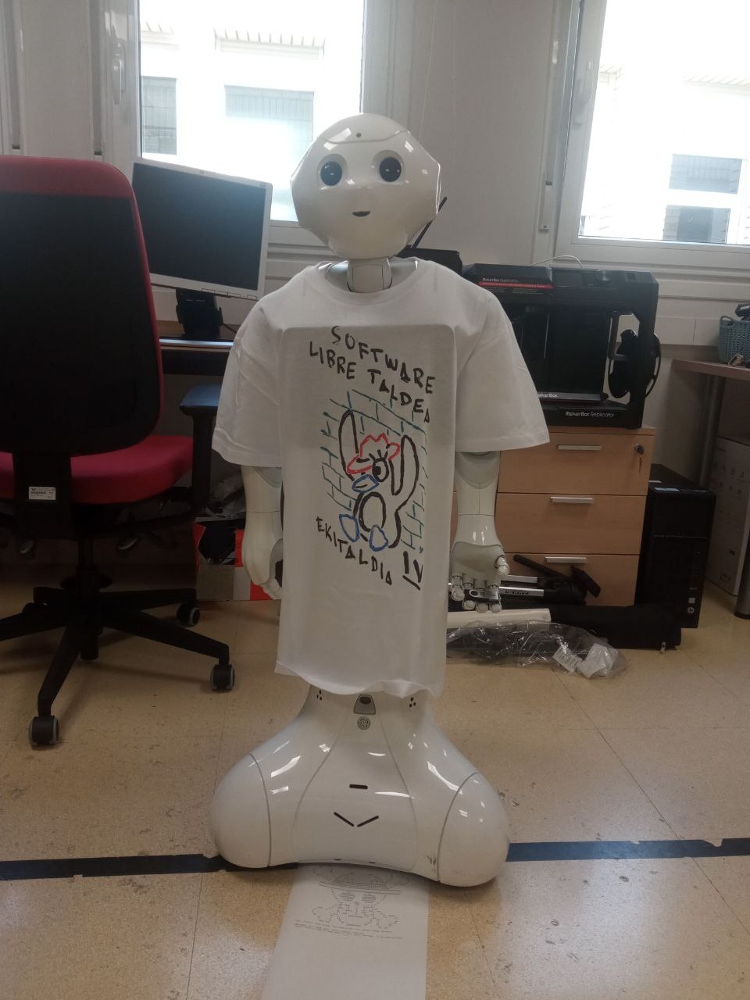
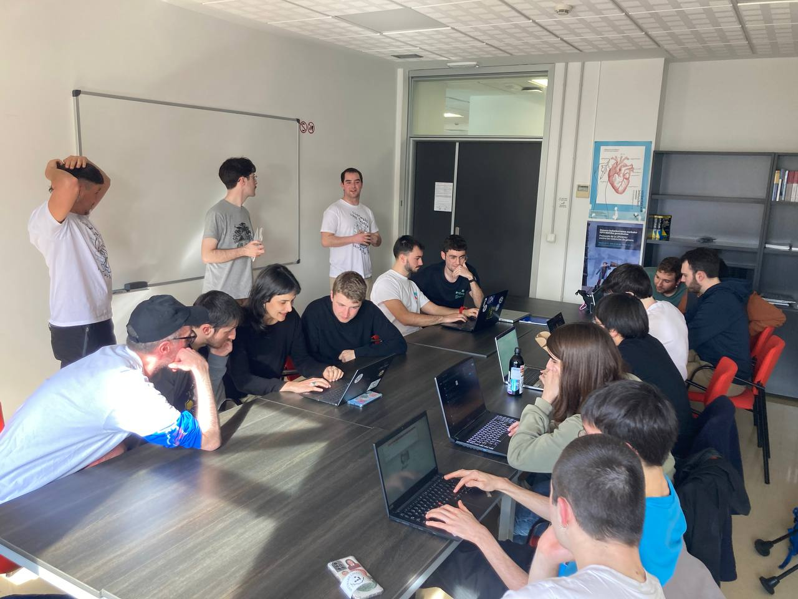
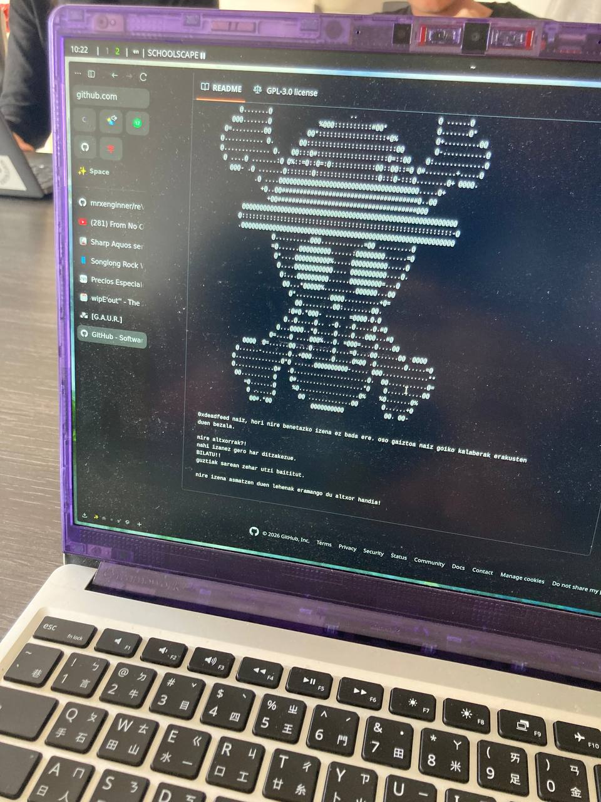
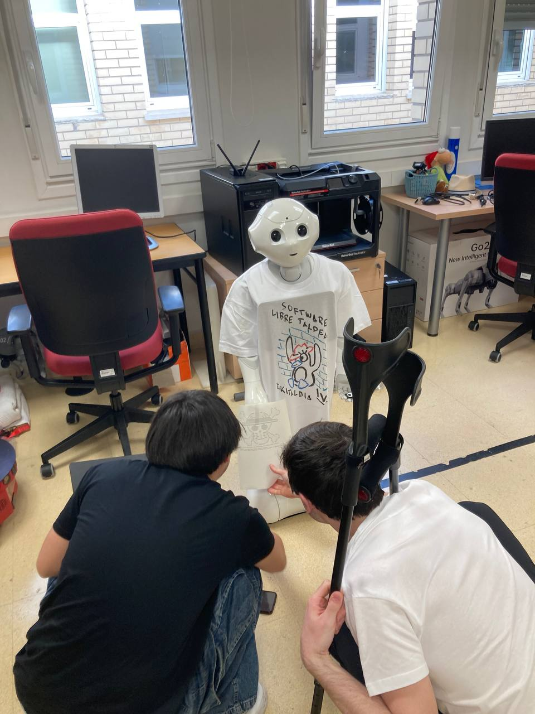
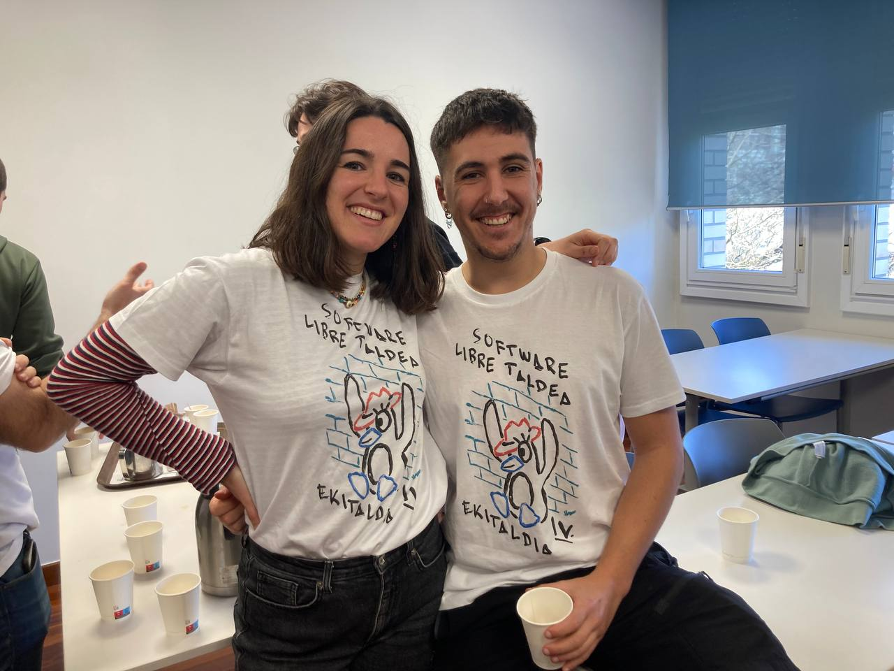

IV. Ekitaldia
Nork esango zuen "erdi presaka" antolatutako ekitaldia horren ondo aterako zenik? Antolatzaileok eguna urduritasun pixka batekin hasi genuen, inoiz ez baitugu jakiten zenbat jende gerturatuko den, ea gerturatutako jendea gustora egongo den, ea aurkezpenetarako ordenagailuak ondo funtzionatuko duen... (spoiler: ez zuen ondo funtzionatu) Baina, azkenean, nola ez, izugarrizko ekitaldia geratu zitzaigun, hitzaldi eta mahai inguru interesgarriekin hasi eta altxorraren bila zirraragarri batekin bukatuz eguna. Hementxe doakizue laburpena, gerturatu zinetenok irribarre batekin gogora dezazuen, eta gerturatu zinetenok hurrengo urtean gerturatu zaitezten. ;)

Mahai ingurua
Ordenagailuaren kulpaz (pixka bat gure kulpaz ere bai, barkatu 👉👈) apurtxo bat berandu hasi zen taldearen aurkezpena, eta horren erruz edo horri esker laburra eta zehatza izan zen. 10:30ak aldera hasi ginen mahai inguruarekin, Adimen Artifiziala eta Software Librea Hezkuntzan gaiaren inguruan hitz eginez. Hizlarien artean Jose Antonio Pascual, Borja Calvo Molinos eta Olatz Perez de Viñaspre Garralda irakasleak izan genituen. Hitz egitea asko gustatzen bazaie ere, jator portatu ziren eta publikoari ere utzi zioten hitz egiten. Bromak broma, iritzi interesgarri eta sakonak entzun genituen bai hizlari eta baita publikoaren aldetik ere. Gure eskerrik beroenak hiru irakasleei, ekitaldiari hasiera paregabea ematen laguntzeagatik.

Kafea
Deskantsu txiki bat egiteko, fakultateko kafetegian prestatutako kafea edan genuen. Gehiengoak lasaitzeko erabili zuen tartea, beste batzuek berriz, mahai inguruarekin nahikoa ez eta gaiaren inguruan hizketan jarraitu zuten. Mila esker informatika fakultateari kafeengatik!
Hitzaldiak
Jarraian, hiru hitzaldi labur entzun genituen, SLT taldeko kideek aurkeztuak. Lehenengo, Mikel Malagonek The Church of Emacs izeneko hitzaldia eman zigun. Mikel ezagutzen duzuenontzat ez zen sorpresa izan: frikismo maila altuko hitzaldia, gauza oso espezifiko baten inguruan, Emacs software librearen inguruan, zehazki. Programa honen ebangelizazioa egitera etorri zen Mikel, eta ondo atera zitzaion; gutako batzuk ziur laster hasiko garela erabiltzen.

Ondoren, Lukas Aranaren eskutik Kontrol Soziala 4.0 izeneko hitzaldia entzun genuen. Europa mailan ateratzen saiatzen ari diren ChatControl legearen eta antzekoen gaineko aurkezpena. Hitzaldi hau ere biziki interesgarria izan zen, software librearen, pribatutasunaren eta kontrol sozialaren inguruko ideiak landu baitzituen. Gainera, zehatza eta xehetasunez betea izan bazen ere, publiko ororentzako egokia izan zen, gizartearen antolamenduaren inguruko solasaldia.
Azkenik, Aitor Larramendik Anna's Archive hitzaldian Interneteko biltegi honen inguruan hitz egin zigun. Biltegiaren arkitektura eta funtzionamenduaren zehaztasun frikiak emateaz gain, zientzia eta kultura librearen inguruko ideiak landu zituen. Anna's Archive liburu eta artikulu zientifikoak lortzeko biltegia da, azkenaldian bereziki ezaguna egin dena, Spotifyren katalogo ia guztia bertan jarri baitute. Biltegi eta iniziatiba honen alde onak eta zatarrak entzun genituen, nola saldu dizkieten datuak enpresa handiei, baina baita nola banatzen dizkieten edonori ere.

Bazkaria
Jarraian, fakultate pareko eskaileretan bazkari ederra izan genuen (batzuek oso goxoa, besteek sinpleagoa, bakoitzak bere tupperra ekarri baitzuen). Informatikariak kalera ere ateratzen garela erakusteko jarri ginen eguraldi ona aprobetxatuz, nahiz eta gehienak itzaletan jarri ginela aitortu behar dugun.
Altxorraren bila
Azkenik, altxorraren bila informatikoa izan genuen. 5-6 talde elkartu ziren pistak eta misterioak pixkanaka argitu eta altxorra bilatzeko ariketan. Zesar zifrak, kode ezkutuak, irudi arraroak eta robot jator baten laguntza izan zuten partaideek, azkenean Hugo eta Erik garaile izan zirelarik, zorionak!




Jokoa, partaideen hitzetan, sekulako arrakasta izan zen, hurrengo urteko ekitaldian nolabait zerbait are hobea egingo dugu, ordea; ziur izan. Irabazleei eta partaideei kamisetak eta sariak eman genizkien, hurrengo urtean berriz etorri daitezen.

Ondorioa
Beste era batera esanda: etorri zaitezte hurrengo urteko ekitaldira! Osora ez bada ere, zati bat bakarrik interesatzen bazaizue ere, hurbildu! Beso zabalik hartuko zaituztegu eta. Berriro ere, eskerrak eman nahi dizkiegu Pasku, Borja eta Olatzi, eta baita gerturatu zineten guztioi ere. Asko gozatuko zenutela espero dugu. Eta, ahaztu gabe, mila esker informatika fakultateari finantziazio eta ekitaldirako beharrezko leku eta bestelakoak emateagatik. Hurrengoan gehiago eta hobea!
Bestalde, adi egon laister egingo ditugun bestelako ekitaldi, fanzine eta antzekoei. Sartu telegrameko taldean guztiaren berri izateko: https://t.me/softwarelibretaldea.